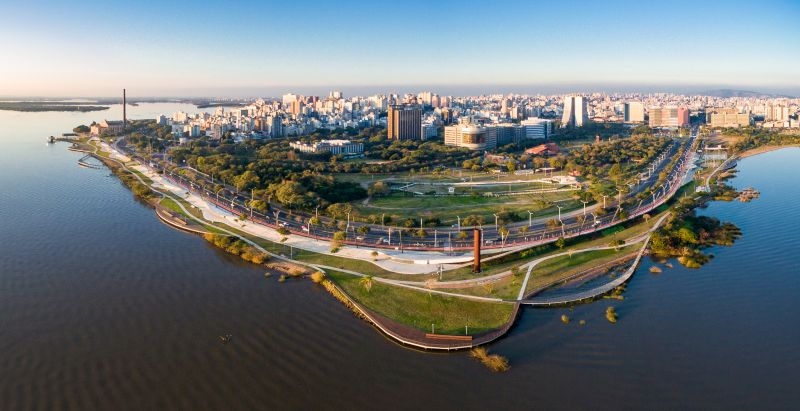

A orla do Guaíba em Porto Alegre é uma área costeira ao longo das margens do Rio Guaíba, que corta a cidade de Porto Alegre, a capital do estado do Rio Grande do Sul, no sul do Brasil. Essa orla é conhecida por sua beleza natural e é um dos locais mais icônicos e populares da cidade.
A orla do Guaíba oferece uma vista deslumbrante do rio e da paisagem ao redor, com suas águas calmas e uma linha do horizonte que inclui prédios modernos e históricos. É um local frequentemente visitado por moradores e turistas que buscam relaxar, fazer atividades ao ar livre, ou simplesmente apreciar o pôr do sol espetacular sobre o Guaíba.
Ao longo da orla, você encontrará ciclovias, calçadões, parques, praças e diversos espaços de lazer. Muitos restaurantes, bares e cafés também estão situados ao longo da orla, oferecendo a oportunidade de desfrutar de uma refeição ou bebida com uma vista panorâmica do rio. Além disso, a orla do Guaíba é palco de eventos culturais e esportivos, como shows ao ar livre, competições de esportes aquáticos e festivais.
Em resumo, a orla do Guaíba em Porto Alegre é um local emblemático que combina beleza natural, lazer e cultura, tornando-se um ponto de encontro importante para a comunidade local e uma atração imperdível para quem visita a cidade.
